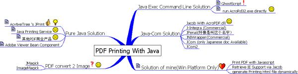

在java中实现PDF打印（PDF Printing With Java）
FuqiangWang
2014年从msn space存档中重新恢复出来！
前一阵子BO需要实现一个新的功能，需要用到Java实现的PDF打印，而调查事宜自然而然就落在这阵子无所事事的王某人身上（我啦，呵呵），下面将调查后的一些信息以及体会罗列如下，以便供其他人参考，如果说你有更好的实现方式，希望能不吝赐教！
就个人划分，针对这个问题，基本上可以从四个方面来考虑：纯Java的solution,Java-Com的solution，PDF格式转换以及基于CmdLine的solution。
下面听我慢慢道来…
纯Java的解决方案
我们首先想到的自然就是JDK1.4提供的JPS（Java Printing Service）啦，不过，这东西虽然说支持PDF的Flavor,但是，不管是个人实验还是网上他人的评论，好像根本就是useless，可能如果说你的打印机Driver支持PDF的Flavor的话，JPS会检测到你的driver的这个特性，能够成功的打印PDF文档出来，但是，大部分情况下，这种情形是不成立的，故此JPS死路一条啦！
让我们看看PDF的老家Adobe那里有没有什么法宝，我们发现一个Viewer Bean的组件，说是可以将PDF以Bean组件的方式潜入到Swing中，哇，太爽了，不过慢着，协议上说不提供任何支持，也不保证不出任何问题，管那么些，试过再说，一实验才知道，靠，Exception频发，而且这个组件较为陈旧，还是扔一边吧！
还有一个PDFBox，Open Source的，不过对中文支持不好，而且好像开发进度也不是很好，没有发布一个正式的版本，基本上不能用于生产环境；
最后，求助于Commercial的产品吧，实验了一下ActiveTree的JPrint，感觉不错，完全可以胜任我们的需求而且恰到好处，不过授权费很贵,Email问过之后的答复是2000USD的最低购买，呵呵，虽然日本人很有钱，但也心疼这个银子啊，所以最终也得作罢！（ActiveTree的授权其实挺令我ft的，他其实在2003年的时候是可以免费使用的，但之后就变卦了，呵呵，当时记得我还给提过一些bug之类，算了，人家做出这个东西也不容易）
其他商业产品也是价格不菲，所以，基本上纯Java的solution到这里就否决了，让我们看Java－Com的解决方案吧！
Java－Com的解决方案
在前一条路走不通之后，我痛定思痛，决定转向自己不熟悉的领域，ms的领地，我打算从Java中调用Com组件，由Com组件来帮助我们实现PDF的打印工作，不够这条路也不是一帆风顺那！
我们知道，Acrobat Reader在发布的时候会随同发布一个支持浏览器的com组件用来manipulate他的这个PDF文档格式，所以，我们想要本地调用这个随同发布的Com组件来实现PDF打印。虽然Version5，6，7的这个组件格式不一样（5，6是以ocx的格式发布，7是以dll的格式发布），但是，不管那么些，先从7开始吧！
要调用com，那么我们需要一个从java到com的Bridge，所以，jacob第一个跃入我的脑海，因为之前就用过嘛！但是麻烦来了，我们并不知道这个com组件提供了那些调用接口啊！哎，没办法，回学校求教熟悉.net的同学，给好不容易弄出几个需要的调用方法（哎，可怜我的周末啊），星期一就回来用jacob调用啦，可是左试右试就是一直抛异常，我那个气啊！难道是jacob的为问题？！我就又找了jcom和jcom2等类似的产品，但jcom全是日文文档，没有办法，而jcom2估计也是一个德行（我忘了为什么当初否决了这个），所以就决定试一试商业产品吧！
这方面的商业产品主要有J-Integra，JPanel（好像叫这个名字）以及一个叫JNIWrapper的产品（这个是一个人用用来演示在java中使用Acrobat5打印PDF的时候提到的）。这些商业产品好的地方就是他可以根据某个你要调用的com组件为你自动生成相应的Proxy对象java代码，这样你就可以直接调用你熟悉的java代码了。像jacob等开源项目，如果给出一个类似的code generation工具的话，就完全不逊于这些商业产品啦。鉴于商业产品的价格，我最终还是否决了这些（日本人其实也听抠门的）。
这样，Java-com也对这个问题没辙了。
不过，最后在我的解决方案中，我还是使用了Jacob,这是后话，暂且不提…
那我们考虑一下，如果PDF打印不行，打印其他格式行不行？！比如图片，这个JPS可以完全打印，所以，我们找一下有没有将PDF格式转换为其他格式的工具吧！
PDF格式转换的解决方案
在这个领域，主要的就是有GhostScript/GView和ImageMagick，前者可以将PDF格式转换为PostScript格式，但是好像GhostScript也不能用JPS完全打印出来；而后者是一个将PDF转换为Image的API工具，他的Java实现叫JMagick，但他有一个跟GhostScript同样的问题，就是要转换，就必须在本地安装，然后通过命令行的方式调用，这个显然也不是很好，而且集成性很差，还是作罢！
命令行调用
剩下的一个是命令行调用啦，这是从itext网站找到的，你可以通过在命令行运行AcroRd32 /p /h “path to PDF file”这样的命令来打印你要打印的PDF文件，当然，你可以在PDF文件生成后就将他们依次放入一个批处理文件来执行这些打印命令，但是这个方案唯一的问题就是，每打印一个文件都会启动一个Acrobat Reader窗口而且必须手动关闭，这现在不能满足目前的系统要求。
好了，所有的方案基本上都罗列完了，也没有找到一个可行的方案:-(
(没有银子嘛，不然Activetree的JPrint不错的说）
这些东西差不多郁闷了我3，4天吧，那几天简直就是bored to death.
Spark
不过，在郁闷的这几天的结尾，却有一道灵光闪过我的脑海…
能不能说启动一个打印service，当文档要打印的时候，直接发送给它就行了那？！而恰好我发现一段在网页中加载PDF文档的Javascript代码，而且完全可以使用js来控制PDF的打印，所以，最终的这个方案就浮出水面了 …
- 使用jacob启动一个IE进程，并隐藏IE窗口；
if(ieAutomation == null)
ieAutomation = new ActiveXComponent("InternetExplorer.Application");
ieAutomation.setProperty("Visible",new Variant(false));PDF前端在生成PDF文件之后发送生成后的文件到JacobPDFPrinter，JacobPDFPrinter根据出入的PDF文件的全路径使用Velocity模板引擎动态生成一个包含使用Javascript代码实现的PDF打印逻辑的HTML文档（当然，使用Velocity生成文档这部分逻辑我们单独抽出到VeloIEPrinterGenerator类中）；
在HTML生成之后，在JacobPDFPrinter中就可以使用jacob调用IE的Navigate2，将IE重定向到刚才生成的这个HTML文件啦，这样，IE就会在后台调用JS代码将PDF打印到默认打印机；
打印成功之后，清除临时动态生成的HTML文件；
当主程序退出之前，Quit后台IE进程。
以上就是我能给出的一个solution，并不完美，但it works.
需要注意的几个问题是：
- 需要设置IE的一个高级选项，运行本地脚本运行；
- 因为Java和Com线程模型的不一致，导致在最终Quit后台IE进程的时候会抛出Com调用异常，因为对于Win平台API以及相关编程模型不是很熟悉，所以，这个问题需要求助于别人帮忙解决；
- IE在执行JS打印PDF的时候，同样会后台启动Acrobat的一个进程，而这个进程我们程序中无法控制其生命周期，所以，主程序退出后，我们没有办法同时kill这个进程，好在不管我们运行多少次，这个进程在后台只有一个，所以，性能负担不是很大；
OK，到这里就是所有可以文字表达的东西，还是那句话，如果你有更好的类似问题的解决方案，还希望你不吝赐教！

「为AI疯狂」星球上，扶墙老师正在和朋友们讨论有趣的AI话题，你要不要⼀起来呀？^-^
这里
- 不但有及时新鲜的AI资讯和深度探讨
- 还分享AI工具、产品方法和商业机会
- 更有体系化精品付费内容等着你，加入星球(https://t.zsxq.com/0dI3ZA0sL) 即可免费领取。(加入之后一定记得看置顶消息呀！)

开天窗，拉认知，订阅「福报」，即刻拥有自己的全模态人工智能。